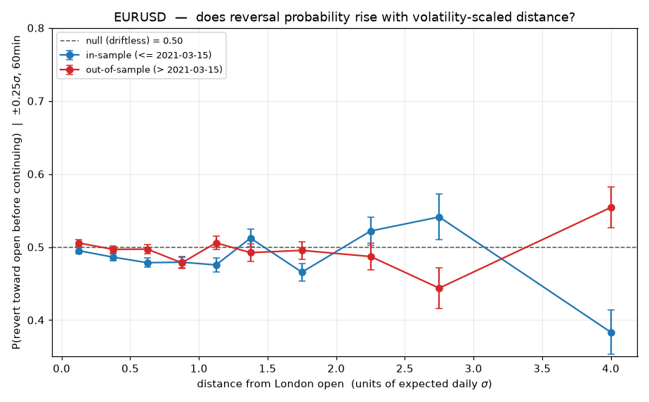
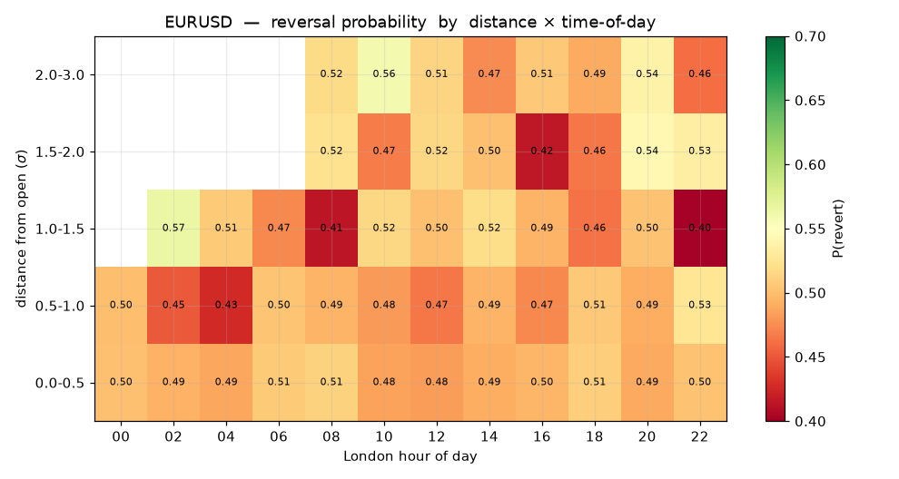
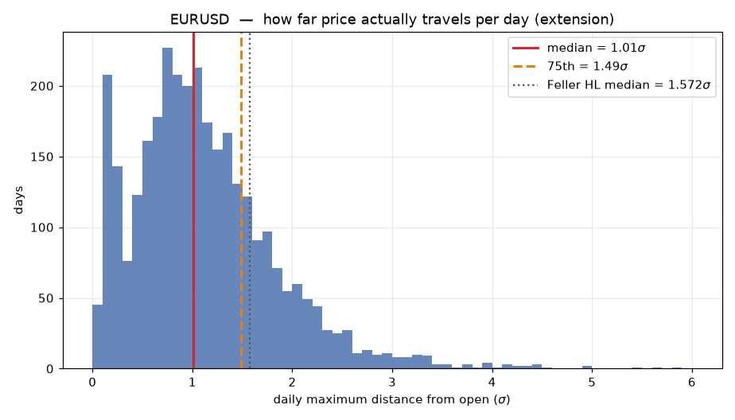
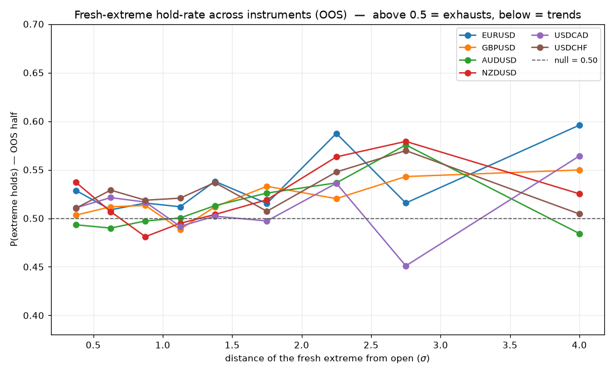
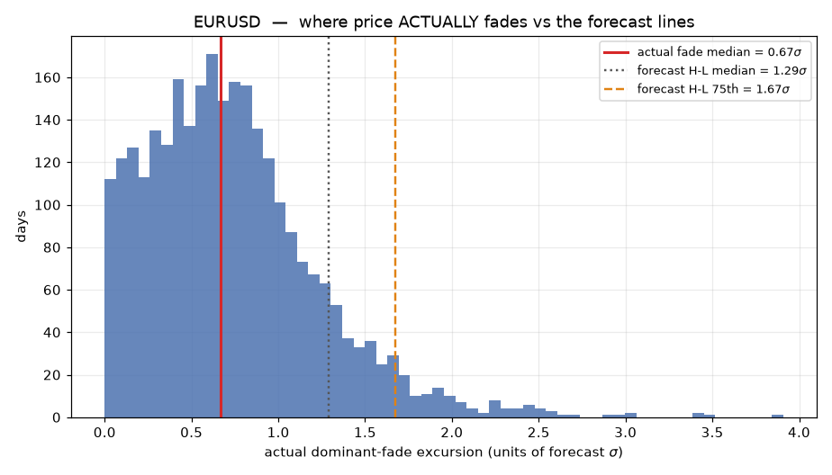
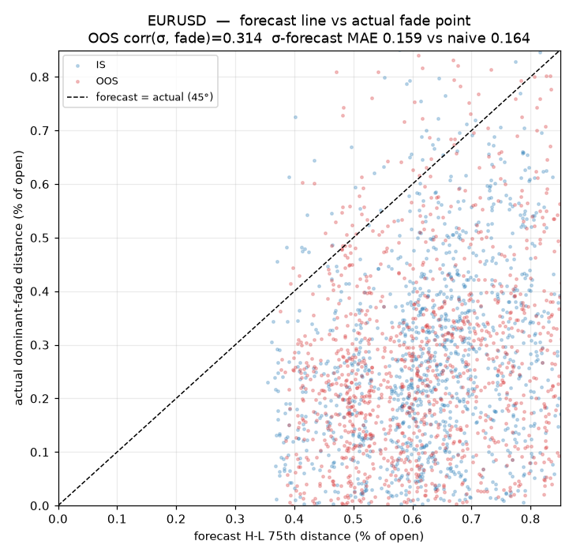
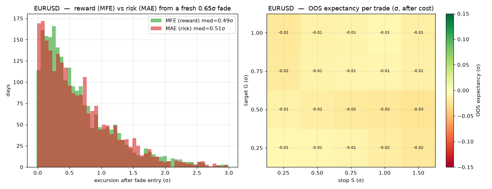

A measurement-first study: does expected volatility tell us where price exhausts and reverts intraday? Built on ~10.4y of M1 (2016→2026), 7 instruments. Every chart below is reproduced by the Python in this folder.
The honest one-line answer: exhaustion in FX is real but weak, dispersed, and — critically — has a symmetric payoff, so it is not tradeable as a mechanical fade. This book shows, step by step, how we know that.
How to read this book. Each section states the question, shows the chart, then gives What it shows and What it means in plain terms. The discipline throughout: the null (a driftless random walk) is pinned at P=0.50 by construction, costs are on, and nothing counts unless it holds on both halves of the data (in-sample and out-of-sample).
0 · The σ contract
Everything is scaled by Yang-Zhang(30) — the exact FX forecast estimator (js/volBacktestEngine.js), computed pre-session with no lookahead. compare_sigma.py runs the real JS and this Python on identical bars and asserts they agree to 1e-10 — it passes at 1.7e-18. So the exhaustion lens sits on the same σ as your live forecaster; it cannot drift.
1 · Distance from the open NULL
Question: when price is X units of expected σ from the open, is it more likely to revert?

Probability that price reverts toward the open (before continuing) vs distance from the open, in σ-units. Blue = in-sample, red = out-of-sample.
What it shows. The curve hugs the 0.50 null at every distance. The far-distance wiggles (>2.5σ) are noise — in-sample and out-of-sample disagree there, which was our pre-registered kill condition.
What it means. Being far from the open, by itself, tells you nothing about whether price will turn. The intuitive "it's stretched, it'll snap back" idea is a null for FX.

Reversal probability across distance × London hour-of-day. Green would mark a genuine exhaustion pocket.
What it shows. No coherent green region anywhere — everything sits 0.42–0.57 with the mass near 0.50. Time-of-day, arrival speed and news splits (charts 3–4) are all flat too.
What it means. There is no hour, no speed, no news condition where distance-from-open becomes a reliable reversal signal. The null is thorough.

Distribution of each day's maximum travel from the open (σ-units).
What it shows. Median daily travel 1.01σ, 75th 1.49σ — sitting right against the theoretical Feller high-low median of 1.572σ.
What it means. A validation check: the σ-scaling is correct and matches theory, so the flat null above is a real finding, not a plumbing bug.
2 · Fresh extremes — "is this THE high?" WEAK, REAL
Question: the fairer test — when price prints a fresh session extreme, does it hold (revert) more often when it's further out?

Probability a fresh extreme holds (reverts before extending), vs its distance from open, OOS, all 6 FX majors. Above 0.50 = exhausts; below = trends.
What it shows. All 6 FX majors sit above the 0.50 null, strengthening past ~1.75–2σ (to 0.55–0.59). The index (NQ, chart 7) sits below 0.50 — it trends instead. The split repeats across both halves on ~44k events each.
What it means. This is the first real thing: FX extremes weakly mean-revert; index extremes weakly continue — the economically-sensible signs. But it's small (≈53/47), and a robustness swap to a completely different estimator (HV20) leaves it intact, so it's not a vol-calc artifact.
3 · Forecast line vs the actual fade point NOT NEAR
Question: is the forecast's dynamic H-L exhaustion line near where price actually fades — and can σ predict that point?

Where price actually makes its dominant fade (blue histogram), vs the forecast H-L median (1.29σ) and 75th (1.67σ) lines.
What it shows. The actual dominant fade happens at a median of ~0.65σ — well inside the forecast lines at 1.29σ and 1.67σ. The forecast lines are ~2.5× farther out than the typical turn.
What it means. The forecast H-L lines mark the day's range extreme, not the reversal point. Fading at the 75th means arriving ~1σ after the turn already happened — in the overshoot tail. This is exactly why blind at-line fades failed in earlier work.

Per-day: forecast distance (x) vs the actual fade distance (y). The 45° line is a perfect forecast.
What it shows. A diffuse cloud below the 45° line. OOS correlation between σ and the realized fade is ~0.31 (0.23–0.33 across all 7). σ-scaling beats a naive fixed-% line 7/7 — but by only ~3%.
What it means. σ gives you a soft zone, not a sharp point: pre-session vol carries a little real information about how far the fade will be, but most of the day-to-day variation it does not explain.
4 · Does trimming the outliers help? NO — 0/7
Question (the owner's): do the rare >95% monster days pull the σ line too wide — would a trimmed/winsorized σ predict the fade zone better?
What it shows. A causal winsorized σ (outliers clipped, recomputed each day — forecast_vs_fade.py robust) predicts the fade worse on 7/7 instruments (correlation falls, MAE rises slightly).
What it means. The tail is signal, not noise. Volatility clusters — a big day is followed by elevated vol — so the RMS σ that "remembers" recent large days predicts better precisely because it keeps them. (Note: the median/75th are percentiles, which are already outlier-robust; the only place outliers enter is the σ scale, and even there, keeping them wins.)
5 · The payoff geometry — the tradeability test NOT TRADEABLE
Question: if you actually faded a fresh 0.65σ extreme, how far does it revert in your favour (MFE) vs how far it runs against you first (MAE)?

Left: reward (MFE, green) vs risk (MAE, red) after a fade entry. Right: out-of-sample expectancy per trade for every stop/target, after approximate cost.
What it shows. The reward and risk distributions are almost perfectly on top of each other (median MFE 0.49σ vs MAE 0.51σ; reward/risk ≈1.0 on all 7 instruments). Every stop/target cell is negative out-of-sample after cost; the in-sample-best cell loses OOS on 6/7 (the lone USD/CAD positive is what noise produces across 7 tests).
What it means. This is the verdict. The exhaustion tendency is real, but the payoff is symmetric — when a fresh extreme reverts, it reverts about exactly as far as it first ran against you. Symmetric payoff minus costs = a loser at every stop/target. A mechanical fresh-extreme fade is not a tradeable edge.
Scoreboard
Question
Answer
Does distance-from-open predict reversal?
Null — flat 0.50, FX & index
Do fresh extremes exhaust?
Weakly yes — ~53/47, 6/6 FX majors, OOS, estimator-robust; index trends
Is the forecast line near the actual fade?
No — lines at 1.3–1.7σ, fade at ~0.65σ (range extreme, not the turn)
Can σ forecast the fade point?
A zone, not a point — corr ~0.3 OOS, beats fixed-% by ~3%
Does trimming outliers help?
No — 0/7; the tail is signal (vol clustering)
Is a fresh-extreme fade tradeable?
No — reward/risk ≈1.0, negative expectancy at every stop/target
The honest conclusion. FX exhaustion is a real but weak, dispersed tendency with a symmetric payoff — a soft zone you could describe, not a precise line you can fade for money. The value here is a clean, cheap map of why every mechanical exhaustion fade fails: the turn is early and shallow, the overshoot that follows is as big as the reversion, and the forecast lines mark the range extreme rather than the turn. That is exactly the kind of null this harness exists to find.
Reproduce: cd volatilityExhaustion && pip install pyarrow numpy matplotlib then python3 measure.py, measure_extremes.py combined, forecast_vs_fade.py, payoff_geometry.py. Charts land in charts/. σ proven identical to the JS forecaster by compare_sigma.py. All results in-sample/out-of-sample split, costs on. EUR/USD shown as the worked example; the other six instruments are in charts/.